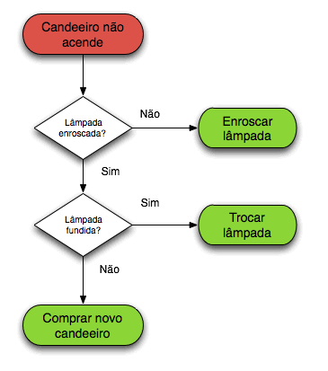

Algoritmo
O que é Algoritmo?
Embora as vezes não percebemos, utilizamos algoritmos no nosso dia-a-dia e não sabemos. Para a execução de alguma tarefa ou mesmo resolver algum problema, muitas vezes inconscientemente executamos algoritmos. Mas o que é Algoritmo?
Algoritmo é simplesmente uma "receita" para executarmos uma tarefa ou resolver algum problema. E como toda receita, um algoritmo também deve ser finito. Se seguirmos uma receita de bolo corretamente, conseguiremos fazer o bolo. A computação utiliza muito esse recurso, então se você pretende aprender programação, obviamente deve saber o que é algoritmo.
Exemplo de Algorítmo
Imagine o trabalho de um recepcionista de cinema, ele deve conferir os bilhetes e direcionar o cliente para a sala correta. Além disso, se o cliente estiver 30 minutos adiantado o recepcionista deve informar que a sala do filme ainda não está aberta. E quando o cliente estiver 30 minutos atrasado o recepcionista deve informar que a entrada não é mais permitida.
Obs: Essas regras não são 100% verdade, eu as defini neste post apenas para fins didático.s
Vamos escrever um algoritmo para descrever a atividade do recepcionista.
Algoritmo Recepcionista de Cinema
Inicio1 - Solicitar ao cliente o bilhete do filme.
2 - Conferir a data e o horário do filme no bilhete.
Se data/hora atual > data/hora do filme + 30 minutos
Então
3 - Informar ao cliente que o tempo limite para entrada foi excedido.
4 - Não permitir a entrada.
Senão Se data/hora atual < data/hora do filme - 30 minutos Então
5 - Informar ao cliente que a sala do filme ainda não foi liberada para entrada.
6 - Não permitir a entrada.
Senão
7 - Permitir a entrada.
8 - Indicar ao cliente onde fica a sala do filme.
Fim-Se
Fim
Qualquer pessoa que seguir esses passos executará a função do recepcionista do cinema. Concorda? É importante notar que o algoritmo tem um fluxo que pode seguir diferentes caminhos dependendo da situação em que se encontra. Outro aspecto interessante é que o algoritmo é finito, uma hora ele tem que acabar! Vejamos outro exemplo, dessa vez com uma representação visual: Como trocar uma lâmpada?
Esta representação gráfica do algoritmo é chamada de fluxograma. Os losangos representam as decisões que são tomadas para executar um ou outro passo. Ao final, a lâmpada tem que estar funcionando.